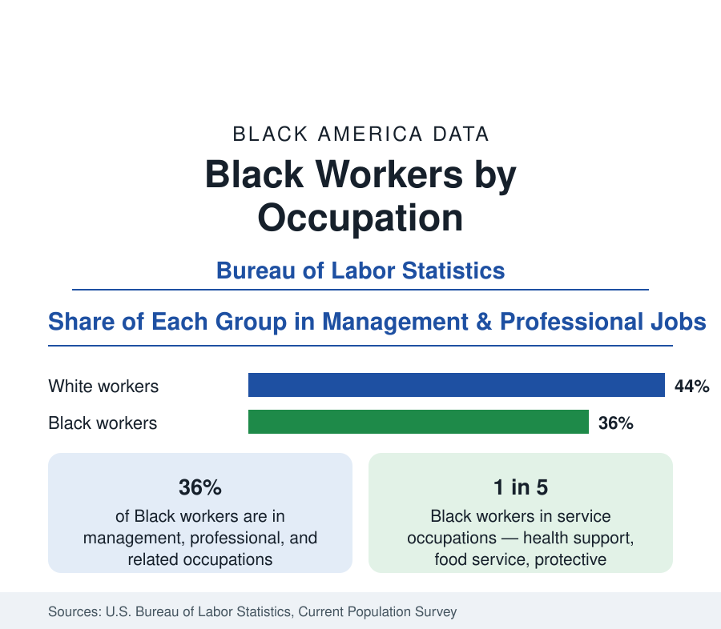

Black Employment
Black Workers by Occupation: Where Black America Works
About 36 percent of Black workers hold management or professional jobs; about one in five works in service occupations. The BLS occupational distribution and its history.

The Current Population Survey sorts every employed American into an occupational structure, and the Black distribution across it explains much of the earnings data in this section. About 36 percent of Black workers hold management, professional, and related occupations — the highest-paid broad group — against about 44 percent of White workers. About one in five Black workers is in service occupations, and Black workers are heavily represented in transportation, health-care support, and administrative work, while remaining underrepresented in the executive ranks of every industry. This article reports the distribution and its main features.
The Broad Distribution
Below the management and professional group, the Black workforce divides roughly as follows: service occupations take about 21 to 22 percent; sales and office occupations about 20 percent, with Black workers particularly concentrated in administrative support; natural resources, construction, and maintenance about 6 to 7 percent — lower than the White share, reflecting historic exclusion from the unionized building trades and agriculture's decline; and production, transportation, and material moving about 17 to 18 percent, where Black representation runs well above population share, anchored by trucking, warehousing, and transit. Each column of this table is an average of thousands of specific jobs, and the detailed tables of the Bureau — republished across this section's industry coverage — show representation within individual occupations ranging from near zero to near half.
Where Representation Is Highest
The occupations with the highest Black shares of employment form a recognizable map of Black work. Health-care support — nursing assistants, home health and personal care aides — records among the highest shares, roughly a quarter to a third Black, reflecting the sector that employs more Black women than any other. Protective service, including security and public-safety roles, postal service work, public transit, and social assistance all record shares around or above one in five. These are disproportionately public-sector and publicly funded occupations — a structural fact about Black employment taken up in this section's public-sector article: government and the health system, not the corporate sector, have been the principal ladders of Black occupational advancement.
Where Representation Is Lowest
At the other end, the thinnest Black representation appears in the highest-compensated and most credential-gated occupations: engineering, computer and mathematical occupations (where Black workers hold a share in the high single digits), law, executive management — Black chief executives of the largest corporations can be counted on one hand in most years, and Black representation in the senior-officer ranks of large companies runs in the low single digits — and the skilled construction trades. Farming and extraction are lowest of all in share terms. The pattern by pay is systematic: with few exceptions, the higher an occupation's median earnings, the lower the Black share of its workforce — the occupational mechanism behind the earnings ratio documented in this section.
Movement Across the Structure
The long trend is upward movement, at generational speed. The Black share in management and professional occupations has roughly doubled since the early 1970s, when it stood in the mid-teens, tracking the attainment gains of the education section with the expected lag. Within the professional group, the fastest growth has come in health professions, education, and business operations; the slowest in engineering and technology. The distribution's center of gravity has meanwhile shifted out of the two historic poles — domestic and agricultural labor, which employed the majority of Black workers within living memory and now employ a small fraction — into the service and support economy. No summary of Black work is accurate that does not hold both facts: the structure has been transformed within two generations, and its gradient against earnings remains steep.
Why the Distribution Matters
Occupation determines more than pay. It sets exposure to unemployment's cycle — service and production work shed jobs first in recessions, one of the mechanisms behind the amplified Black business cycle in this section's unemployment article — access to employer health insurance and retirement plans, physical wear of the kind recorded in the health data, and the wealth accumulation the business section measures. When the earnings article of this section reports an 80-cent ratio, the occupational table is the largest single component of the explanation: not the whole of it, since gaps persist within occupations, but the foundation on which the rest is built.
The distribution in one view: 36 percent in management and the professions and rising; a fifth in services; deep strength in health support, public service, and transportation; thin presence where pay is highest. It is the map of where Black America works — and the starting point for every question about what that work returns.
More in Black Employment
The Black Unemployment Rate: The Two-to-One Pattern
Black unemployment runs at roughly twice the White rate — 5.5 percent against 3.3 percent in annual averages — a ratio stable across five decades of federal data. How it is measured and why it persists.
Black Median Weekly Earnings: The 80-Cent Ratio
Black full-time workers earn a median of about $900 a week — roughly 80 cents for every dollar White workers earn. The BLS earnings data by group, gender, and occupation.
Black Labor Force Participation: Working at National Rates
Black labor force participation runs at roughly the national rate — and Black women participate at higher rates than White women. The BLS participation data.
Source: U.S. Bureau of Labor Statistics, Current Population Survey, Employed persons by occupation, race, and Hispanic or Latino ethnicity.